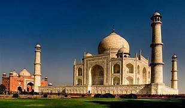

The Taj Mahal:

India's Eternal Monument of Love
Introduction:The Taj Mahal, one of the world's most iconic and beloved landmarks, stands as a testament to love, architectural excellence, and timeless beauty. Located in Agra, India, this mausoleum has captured the hearts of millions and continues to be a symbol of India's rich cultural heritage. In this blog post, we will explore the history, architecture, and enduring significance of the Taj Mahal.
A Tale of Love:The Taj Mahal was built by Emperor Shah Jahan in memory of his beloved wife, Mumtaz Mahal. Their love story is legendary, and upon Mumtaz's untimely death during childbirth in 1631, Shah Jahan vowed to create a monument that would immortalize their love.
Architectural Marvel::The Taj Mahal is a masterpiece of Mughal architecture, blending various design elements from Persian, Islamic, and Indian architectural styles. Its stunning white marble façade, intricate calligraphy, and symmetrical gardens are awe-inspiring. The mausoleum's central dome, flanked by four minarets, is an engineering marvel.
Visiting the Taj Mahal: When visiting the Taj Mahal, it's advisable to arrive early to witness the ethereal beauty of the monument at sunrise. The site includes the main mausoleum, beautiful gardens, and a mosque. Respectful attire is recommended, and photography is allowed at specific locations.
The Taj's Enduring Significance: UNESCO World Heritage Site ,Symbol of Love ,Architectural Influence ,Tourist Magnet ,Conservation Efforts.
Conclusion:The Taj Mahal stands not only as a stunning architectural achievement but also as a symbol of the enduring power of love. Its pristine white marble, intricate details, and captivating history continue to enchant visitors and remind us of the profound beauty that human creativity can achieve. As you stand in the presence of this remarkable monument, you can't help but feel the weight of history, the depth of emotion, and the enduring legacy of a love that transcends time. The Taj Mahal truly is a treasure of India and a marvel of the world.